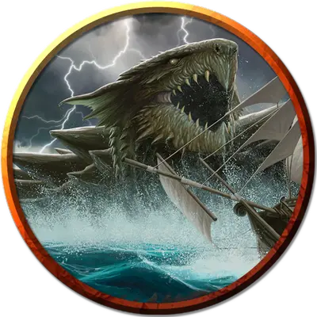

Молодая дракочерепаха
Young Dragon Turtle
Огромный Дракон, нейтральный

Класс Доспеха 19 (природный доспех)
Хиты 178 (17к12 + 68)
Скорость 20 футов, плавая 40 футов
| мод | спас | ||
|---|---|---|---|
| СИЛ | 21 | +5 | +5 |
| ЛОВ | 10 | +0 | +4 |
| ТЕЛ | 19 | +4 | +8 |
| мод | спас | ||
|---|---|---|---|
| ИНТ | 10 | +0 | +0 |
| МДР | 12 | +1 | +5 |
| ХАР | 12 | +1 | +1 |
Сопротивление урону огонь
Чувства тёмное зрение 120 футов, пассивное Восприятие 11
Языки Акван, Драконий
Опасность 10 (5900 опыта)
Бонус мастерства +4
Особенности
Амфибия. Дракочерепаха может дышать как воздухом, так и водой.
Действия
Мультиатака. Дракочерепаха совершает одну атаку Укусом или Хвостом и две атаки Когтем.
Укус. . Рукопашная атака оружием: +9 к попаданию, досягаемость 10 фт., одна цель. Попадание: 11 (1к12+5) колющего урона плюс 6 (1к12) урона электричеством.
Коготь. . Рукопашная атака оружием: +9 к попаданию, досягаемость 5 фт., одна цель. Попадание: 9 (1к8+5) рубящего урона.
Паровое дыхание (перезарядка 5-6). Дракочерепаха выдыхает пар в 30-футовом конусе. Все существа в этой области должны совершить спасбросок Телосложения Сл 16, при провале получая 42 (12к6) урона огнём или половину этого урона при успехе. Нахождение под водой не даёт сопротивления к этому урону.
Опциональные правила
Драконы и врождённое колдовство. Этот дракон от природы может накладывать одно заклинание, 1/день каждое, и ему не требуются для этого материальные компоненты. Уровень каждого заклинания не может быть выше 3-го. Заклинание дракона, имеют Сл спасброска 13, и он имеет +4 к попаданию атаками заклинаниями.
Ниже приведен список предлагаемых заклинаний, но вы также можете выбрать заклинания, отражающие характер дракона. Дракон, который от природы накладывает заклинания друидов, ведёт себя иначе, чем тот, кто накладывает заклинания колдуна. Вы также можете дать дракону заклинания более высокого уровня, чем позволяет это правило, но такая настройка может повысить ПО дракона — особенно если эти заклинания наносят урон или накладывают состояния на цели.
• Туманное облако [fog cloud]. (Fizban's Treasury of Dragons)
Персонализация дракона. Как уже говорилось в «Руководстве Мастера», вы можете настроить блок статистики любого дракона, чтобы отразить его уникальный характер. Незначительные изменения, такие как приведенные ниже, легко сделать, и они не влияют на ПО дракона. (Fizban's Treasury of Dragons)
Языки. Большинство драконов предпочитают говорить на Драконьем, но для общения с союзниками и приспешниками изучают Общий. Но, учитывая высокий Интеллект и продолжительный срок жизни, драконы могут легко выучить дополнительные языки. Вы можете добавить языки в блок статистики дракона.
Навыки. Большинство драконов владеют навыками Восприятие и Скрытность, а многие драконы владеют дополнительными навыками. Как и в случае с языками, вы можете изменить список навыков дракона (даже удвоить бонус мастерства), чтобы отразить его интересы и занятия. Вы также можете наделить дракона владениями инструментами, особенно если дракон проводит время в гуманоидной форме.
Заклинания. Опциональное правило «Бестиария» о том, чтобы сделать драконов с врожденным колдовством, — это простой способ добавить драконам разнообразия, не влияя на их ПО. В Главе 5 «Дракономикон» предлагаются списки заклинаний для разных видов драконов, но вы также можете выбрать заклинания, отражающие характер дракона. Дракон, который от природы накладывает заклинания друидов, ведёт себя иначе, чем тот, кто накладывает заклинания колдуна. Вы также можете дать дракону заклинания более высокого уровня, чем позволяет это правило, но такая настройка может повысить ПО дракона — особенно если эти заклинания наносят урон или накладывают состояния на цели.
Другие черты и действия. Вы можете заимствовать черты и действия у других монстров, чтобы придать дракону уникальную изюминку. Рассмотрим эти примеры:
Изменение формы. Вы можете решить, что дракон приобретает это действие в более раннем возрасте, чем обычно, особенно если вы хотите представить в своей кампании дракона в гуманоидной форме. (См. металлические драконы).
Поглощение урона. Вы можете решить, что красный или золотой дракон не только не получает урон от огня, но и исцеляется от него. (См. мясной голем [flesh golem]).
Облёт. Дракон - проворный летун, быстро вылетающий из зоны досягаемости врагов. (См. перитон [peryton]).
Подражание. Изображение персонажей или их союзников может стать забавным трюком для хитрого дракона. (См. кенку [kenku]).
Омоложение. Вы можете решить, что драконы в вашей кампании, будучи неотъемлемой частью Материального плана, почти невозможно уничтожить. Жизненная сущность дракона может храниться в яйце, из которого он появился на свет, в его кладе или в пещерном зале в центре мира, так же как сущность лича спрятана в филактерии. (См. лич [lich]).
Особые чувства. У большинства драконов есть слепое зрение и темное зрение. Вы можете улучшить зрение до истинного зрения или наделить дракона скоростью рытья или чувством вибрации. (См. зрение и свет).
Прокладывание туннеля. Эта особенность может быть присуща любому дракону, обладающему скоростью копания - он может двигаться сквозь твёрдую породу, оставляя за собой туннель. (См. бурый увалень [umber hulk]).
Описание
Дракочерепахи - могущественные существа, чья врожденная магия тесно связана с океанами Материального Плана. дракочерепаха, представленная в "Бестиарии", является взрослой, по меньшей мере в сто лет, и может похвастаться ценными сокровищами. Вы можете использовать блоки статистики в этом разделе для старших или младших черепах-драконов.
Древняя дракочерепаха - мифическое существо, похожее на великого змея, сочетающее в себе силу множества отголосков со всех миров Материального плана. Такое существо может быть размером с остров — и действительно, легенды предполагают, что многие невольные моряки, потерпевшие крушение в море, приняли дремлющих дракочерепах за твердую почву.
Древние дракочерепахи могут спать годами или десятилетиями, плавая по поверхности океана, наслаждаясь солнечным теплом и позволяя растительности укорениться на их панцирях. На разгневанную древнюю дракочерепаху страшно смотреть, изрыгающая жар из панциря, чтобы вскипятить окружающую воду - и любых существ в ней. И даже если враг ослабляет защиту дракочерепахи, магические шторма проявляются, чтобы защитить ее и нанести удар по врагам.